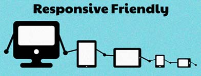

Responsive Web Design
Ainhoa Iglesias
feb'16
Esta semana aprenderemos RWD
- Qué es
- Pilares fundamentales
- Layout flexible
- Multimedia flexible
- Media Queries
- Contenido flexible
¿Qué es Responsive Web Design?
Diseño Web...
- Responsable?
- Sensible?
- Adaptable?
- Para móviles o tablets?
¿Qué es Responsive Web Design?
- Técnica web / Filosofía de trabajo
- Ethan Marcotte: el culpable
- Relativamente reciente (2010)
Objetivo
Adaptar el contenido al entorno del usuario
¿cuál entorno?
Entorno
- ¿Ordenadores de escritorio?
- ¿Smartphones?
- ¿Tablet?
- ¿gafas, reloj, nevera, consola?
- ¿Para qué navegador?
- ¿Para qué sistema operativo?
- ¿Para qué usuarios?
Entorno
¿Por qué usar RWD?
Hay que poner orden
Olvídate del control
En la Web no puedes controlar:
- El dispositivo
- La orientación
- El sistema operativo
- La resolución
- El contenido
- Futuro (a muy corto plazo)
Olvídate del control
¿Aún no estás convencido? visita:
Olvídate del control
- Haciendo unos cálculos a ojo: muchos smartphones, tablets, infinitos pc/portátiles...
- Suma todo y multiplícalo por: orientación, sistema operativo, navegador...
Es absurdo querer controlar al pixel!
¿Cómo olvidarse del control?
Muy sencillo: adaptarse
"No es el más fuerte ni el más inteligente el que sobrevive, sino el más capaz de adaptarse a los cambios" -Darwin.

Adaptarse
En el Mundo Real™:
Beneficios generales
Reducción de costes: *
- Un único dominio/hosting
- Una única actualización
* Cuando ya tenemos el RWD implementado
Beneficios generales
Usuarios/clientes contentos:
- Mejora experiencia de usuario (p.e. adiós zoom)
- Aumenta la conversión, implica más ventas
- Impacto positivo en el usuario, mejor imagen de marca.
Beneficios SEO
- Una única URL
- Redirecciones innecesarias
- Facilita y mejora la indexación
- Estrategias SEO más óptimas
Ya avisaba Google en 2012...
Beneficios SEO
A partir del 21 de abril de 2015, los contenidos adaptados a móviles influyen en los resultados de búsqueda (desde dispositivos móviles).
Fuente: Google
Tipos de proyecto
- Nueva web
- Existe una web, nos piden añadir RWD
- Doble versión (evitar)
Nueva web
Proyecto ideal
- Partimos de cero: todo son ventajas
- Estrategia más sencilla y sin condicionantes
- El RWD es otra característica más y forma parte desde el inicio
- Las decisiones se toman entre todos

(fuente: Cole Sanderson)
RWD después
Proyecto no ideal: web hecha y en producción
- Análisis previo de viabilidad e impacto
- Handicaps de CMS
- Elaboración de estrategia de adaptación
RWD después
- Igual hay aspectos del RWD no viables
- Supone más coste
- El resultado puede no ser muy bueno
- A veces da sensación de haber hecho el mínimo esfuerzo
RWD puede ser una misión imposible
Doble versión
Si no es viable una adaptación (pero no es recomendable)
¿Te suenan estas expresiones?:
- Ver sitio completo
- Versión de escritorio
- Web completa
- ...
Mala imagen
Flujo de trabajo
El flujo de trabajo cambia
Antes: secuencial
Ahora: interrelacionado
(fuente: Web Designer Legder)
Adaptar
Una única web, para dominarlos a todos: